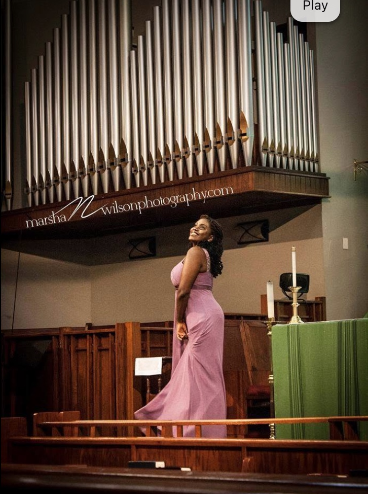
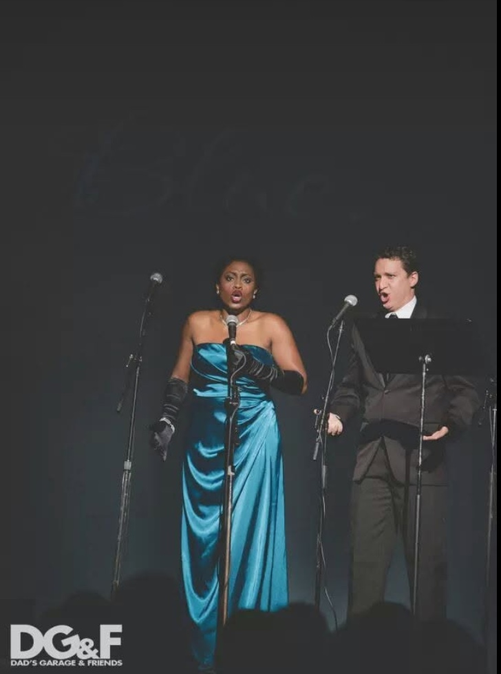
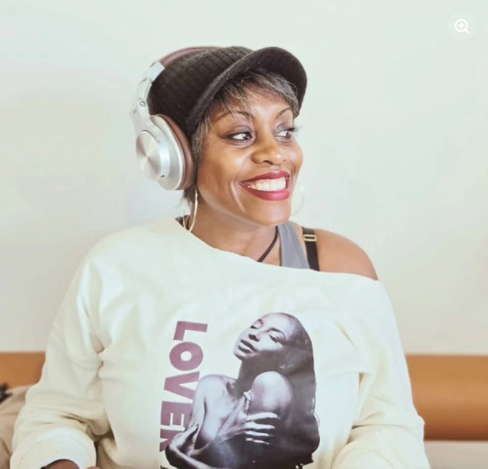
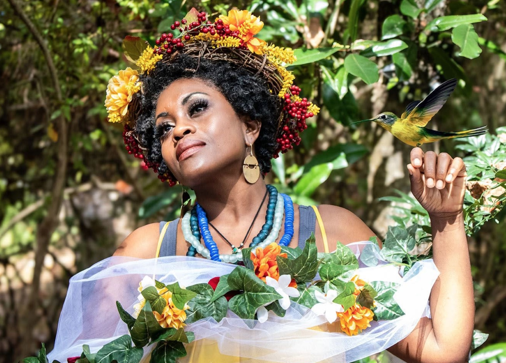

The thread that connects the artist, coach, speaker, visionary, community builder, and military veteran.
Jayme Alilaw is an opera singer, transformational coach, and visionary leader committed to creating spaces where art, voice, and community flourish. With over 20 years of professional performance experience on opera and concert stages across the nation, she brings a powerful soprano voice and a gift for storytelling that bridges tradition and innovation. She is the creator of Black Lilith Burlesque and the Good Soil: Garden Gallery Series, which weave music, poetry, and ritual into immersive performance experiences that center human stories, healing, and sovereignty.
As the founder of From The Core Coaching and creator of The Resonant Voice™ framework, Jayme supports leaders, creatives, and changemakers in embodying their authentic voice and leading with presence, clarity, and courage. Her coaching and speaking offerings invite clients and audiences alike to dissolve fear, reframe self-esteem, and step into resonance without force.
Through her work with Good Soil Production + Management, Jayme cultivates fertile ground for artists and communities to thrive. Guided by the belief that artistry is not separate from leadership, she builds bridges between performance and personal growth, creating experiences that transform both the stage and the self.
An Army veteran, mother, and creative entrepreneur, Jayme embodies a holistic vision of artistry and leadership rooted in resilience, beauty, and truth. Whether through song, story, or soul-centered coaching, she calls people into deeper alignment with their own power and possibility.


With advanced degrees in Vocal Performance and more than 15 years of experience on opera and concert stages, Jayme brings both power and intimacy to traditional and contemporary repertoire.
She recently originated the role of The Mother in I Can't Breathe, an opera by Brandon J. Gibson and Leslie Burrs, and served as a Resident Artist with The Atlanta Opera for 10 years, where she performed in community tours, developed school residencies, and created innovative collaborations with organizations including The High Museum, The Alliance Theatre, the Museum of Design Atlanta, and Dad's Garage Theater, where she co-founded the operatic improv troupe ImprOper.
A veteran of the U.S. Army, Jayme has performed at military ceremonies across the world, including during her deployment to Northern Iraq. Today, she continues to merge artistry and advocacy through projects like La Femme Noire: The Celebrated Woman, a concert honoring the contributions of African American women composers, poets, and singers. As an artist advocate, she was a Leadership Council member of the Black Opera Alliance and currently serves as a member of the OPERA America Civil Practice Council.
Follow @sangmsjayme on Instagram
Through one-on-one coaching, organizational training, and dynamic workshops, From The Core Coaching helps clients reconnect with their values, align words with action, and unlock their authentic voice.
Jayme's signature framework, The Resonant Voice™, weaves together her expertise as a performer, coach, and executive leader. With bold directness, grace, and humor, she guides clients through intimidating conversations and self-limiting beliefs, creating space for clarity, courage, and resonance without force.
Jayme is also a Leadership Coach with LUMO Leadership, where she specializes in anti-racism and culture transformation, DEI implementation, and facilitating the difficult conversations organizations need to align their stated values with their actual practice.
An Army combat veteran, mother, and artist, Jayme brings a unique depth of perspective to her coaching. As an Atlanta-based executive coach and a Black women's empowerment coach, she works with executives, creatives, and changemakers across industries to dissolve fear, reframe self-esteem, and embody their fullest presence. Her coaching is not only transformational for individuals — it strengthens teams, inspires organizations, and builds cultures rooted in authenticity and possibility.
Follow @fromthecorecoaching on Instagram
Good Soil serves as a community builder, providing artists with structural support, creative development, and access to aligned funding partners.
At the heart of Good Soil's work is the belief that when artists are nourished, culture flourishes. The organization supports creators through commissioning and platforming innovative projects, offering administrative and mindset support, and building networks that prioritize collaboration, inclusion, and sustainability.
Good Soil's portfolio includes groundbreaking works like I Can't Breathe, La Femme Noire: The Celebrated Woman, Voices Reclaimed, Black Lilith Burlesque, and The Winter's Journey Project. These projects not only engage audiences but also elevate underrepresented voices, model new ways of making art, and address systemic inequality in the performing arts.
VisionA thriving, community-centered music and theater ecosystem where artists are valued, empowered, and supported in creating meaningful, sustainable work.
MissionTo cultivate artistry, financial stability, and creative freedom by championing artists, building communal networks, and producing works that transform culture.